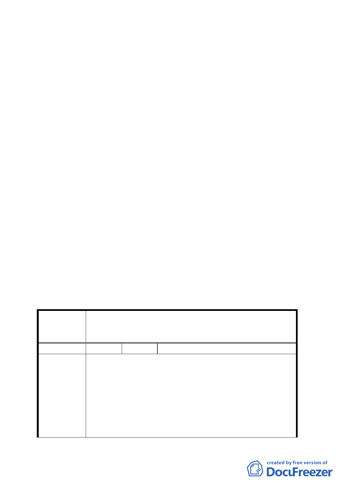

容通過。
（一）計畫區北側計畫道路路寬並不一致（西段 20 公尺、東段 12.74
公尺），本案配合變更住宅區為道路用地，使北側道路路寬
統一達 20 公尺，以順平路型。
（二）計畫區西北側原擬由住宅區變更為商業區區域，分區名稱
一併調整為「特定專用區」。
（三）同意市府為整體環境景觀考量，將變電所用地變更為特定
專用區，惟未來該特定專用區內仍應允許變電所設施使
用，以維持地區供電需求。
（四）本案涉及土地使用分區及用地變更，依規定應辦理回饋，
相關文字請於主要計畫書內載明，至於詳細回饋內容，另
於細部計畫再作規範。
（五）計畫案名請配合審查決議修正。
二、有關本計畫特定專用區未來使用項目，同意納入住宅使用。
另外，有關拆遷安置之民眾陳情及延續中正紀念堂至永康商圈
都市活動之委員建議，建請開發單位納入後續再開發計畫擬訂
考量。
三、公民或團體陳情意見決議詳如綜理表。
臺北市都市計畫委員會 公民或團體陳情意見綜理表
案名
變更臺北市華光社區暨週邊地區住宅區、電信用地、郵
政用地及變電所用地土地為商業區、數位科技專用區及
金融服務專用區主要計畫案
編號
陳情理由
１ 陳情人 陳淑麟
1.華光社區不僅是臺北市眾所矚目的指標社區，更是影
響原居住於此的光明里、錦泰里的里民，由單純的文
教住宅區轉變成複合式住宅特種商業混合區，為何如
此重大轉變從沒有召開里民大會說明，反而以區公所
公開展覽說明取代之，漠視兩里里民知的權益，真正
侵害里民權益莫此為甚。
2.杭州南路 2 段 25 巷前段馬路 20 公尺寬，但中～後段
僅 12.74 公尺寬，頭大尾窄如何能疏散交通？目前 25
-7-